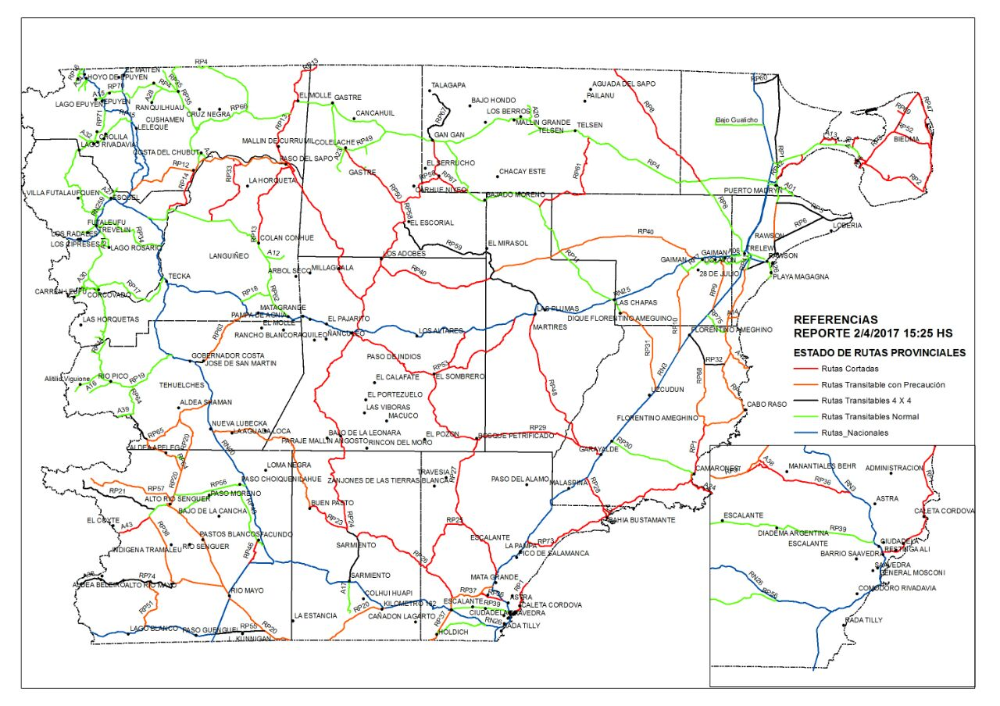

Real Chubut - Agencia de Noticias


ESTADO DE RUTAS DIA 2/04/17 15:22 HS

A continuación se detalla el estado de las rutas nacionales y provinciales del Chubut con referencias de sus estados y anegamientos.
REFERENCIAS MAPA:
CELESTE: RUTAS NACIONALES
ROJAS: RUTAS CORTADAS
NEGRO: RUTAS TRANSITABLES CON 4X4
VERDES: RUTAS TRANSITABLES NORMAL
NARANJA: RUTAS HABILITADAS CON PRECAUCIÓN
DEPARTAMENTOS:
DEPARTAMENTO CUSHAMEN-LANGUIÑEO
RUTA PROVINCIAL N°12
TRAMO: EMPALME RUTA NAC. N°40 GUALJAINA (TRANSITABLE CON PRECAUCION POR BARRO)
TRAMO: GUALJAINA - PASO DEL SAPO (CORTADA)
TRAMO: PASO DEL SAPO – CERRO CONDOR (CORTADA)
TRAMO: CERRO CONDOR – EMPALME RUTA NACIONAL N°25 (CORTADA)
RUTA PROVINCIAL N°13
TRAMO: PASO DEL SAPO – COLAN CONHUE (CORTADA)
TRAMO: PASO DEL SAPO – EMPALME RUTA PROVINCIAL N°4 (EL MOLLE) (CORTADA)
RUTA PROVINCIAL N°14
TRAMO: EMPALME RUTA PROVINCIAL N°62 – GUALJAINA (CORTADA)
RUTA PROV 33:
TRAMO RUTA PROVINCIAL N°12 – EMPALME RUTA PROVINCIAL N°62 (CORTADA)
DEPARTAMENTO TEHUELCHES – PASO DE INDIOS
RUTA PROV 64:
EMPALME RUTA PROVINCIAL N°65 –EMPALME RUTA PROVINCIAL N°20
RUTAS TRANSITABLES CON 4X4
RUTA PROV 65:
TRAMO EMPALME RUTA PROVINCIAL N°64 –EMPALME RUTA PROVINCIAL N°20 (TRANSITABLE CON PRECAUCION POR BARRO)
RUTA PROV 57:
TRAMO RIO UNION –EMPALME RUTA PROVINCIAL N°20 (TRANSITABLE CON PRECAUCION POR BARRO)
RUTA PROV 38:
RIO SENGUER - EMPALME RUTA PROVINCIAL N°74 (TRANSITABLE CON PRECAUCION POR BARRO)
RUTA PROV 74:
RUTA PROV 74 -EMPALME RUTA PROVINCIAL N°20 ALDEA BELEIRO (TRANSITABLE CON PRECAUCION POR BARRO)
RUTA PROV 51:
RUTA PROV 51 -EMPALME RUTA PROVINCIAL N°74 - EMPALME NACIONAL 260 (TRANSITABLE CON PRECAUCION POR BARRO)
RUTA PROV 63:
RUTA PROV 63 -EMPALME RUTA NACIONAL 40 EMPALME NACIONAL 25 (TRANSITABLE CON PRECAUCION POR BARRO)
RUTA PROV 23:
RUTA PROV 23 -EMPALME RUTA PROVINCIAL N°24 - EMPALME NACIONAL 40 (TRANSITABLE CON PRECAUCION POR BARRO)
RUTA PROV 23 -EMPALME RUTA PROVINCIAL N°24 - BUEN PASTO.
CORTADA
RUTA PROV 24:
RUTA PROV 24 -EMPALME RUTA PROVINCIAL N°23 PASO DE INDIOS CORTADA
RUTA PROVINCIAL 27
TRAMO EMPALME RUTA PROVINCIAL 53 EMPALME RUTA PROVINCIAL 29. CORTADA
DEPARTAMENTO SARMIENTO-ESCALANTE
RUTA PROVINCIAL Nº26
TRAMO ESPALME RUTA PROVINCIAL 24 EMPALME RUTA PROVINCIAL 25 CORTADA
TRAMO EMPALME RN Nº 25 EMPALME RUTA PROVINCIAL 37 CORTADA
RUTA PROVINCIAL Nº 25
TRAMO EMPALME RUTA PROVINCIAL Nº 26 CORTADA
TRAMO EMPALME RUTA PROVINCIAL Nº 27 CORTADA
RUTA PROVINCIAL Nº 27
EMPALME RUTA NACIONAL Nº25 CORTADA
EMPALME PROVINCIAL Nº 26 CORTADA
RUTA PROVINCIAL Nª29
EMPALME PROVINCIAL Nº 27 CORTADA
EMPALME NACIONAL Nº3 CORTADA
RUTA PROVINCIAL Nº 53
TRAMO PASO DE INDIOS EMPALME NACIONAL Nº25 CORTADA
RUTA PROVINCIAL N 1
COMODORO RIVADAVIA RUTA 1 ENTRE KM8 Y ROCAS COLORADAS.
CORTADA
RUTA PROVINCIAL 73
TRAMO RUTA NACIONAL 3 EMPALME RUTA PROCINCIAL 1 CORTADA
RUTA PROVINCIAL 23
TRAMO BUEN PASTO EMPALME RUTA PROVINCIAL 24, SARMIENTO CORTADA
DEPARTAMENTO MÀRTIRES -FLORENTINO AMEGHINO-GAIMAN
RUTA ROVINCIAL Nº 48
TRAMO EMPALME NACIONAL N25 CORTADA
EMPALME PROVINCIAL Nº29 CORTADA
RUTA PROVINCIAL Nº 28
TRAMO EMPALME NACIONAL Nº3 EMPALME PROVINCIAL Nº1 CORTADA
RUTA PROVINCIAL Nº 1
TRAMO BAHÍA BUSTAMANTE-CAMARONES CORTADA
TRAMO CAMARONES RAWSON TRANSITABLE CON PRECAUCIÓN
RUTA PROVINCIAL Nº 9
EMPALME RUTA NACIONAL Nº3 TRANSITABLE CON PRECAUCIÓN
EMPALME PROVINCIAL Nº 7 TRANSITABLE CON PRECAUCIÓN
RUTA PROVINCIAL Nº10
EMPALME RUTA NACIONAL Nº25 TRANSITABLE CON PRECAUCIÓN
EMPALME RUTA NACIONAL Nº3 TRANSITABLE CON PRECAUCIÓN
RUTA PROVINCIAL Nº31
TRAMO DIQUE FLORENTINO AMEGHINO RUTA NACIONAL Nº3 TRANSITABLE CON PRECAUCIÓN
RUTA PROVINCIAL Nº 32
EMPALME NACIONAL Nº3 TRANSITABLE 4 x 4
EMPALME RUTA PROVINCIAL Nº1 TRANSITABLE 4 x 4
RUTA PROVINCIAL Nº68
EMPALME RUTA PROVINCIAL Nº1 TRANSITABLE CON PRECAUCIÓN
EMPALME RUTA PROVINCIAL Nº32 TRANSITABLE CON PRECAUCIÓN
RUTA PROVINCIAL Nº 40
TRAMO EMPALME RUTA PROVINCIAL Nº12 TRANSITABLE CON PRECAUCIÓN
TRAMO EMPALME RUTA NACIONAL Nº25 TRANSITABLE CON PRECAUCIÓN
DEPARTAMENTO GASTRE-TELSEN-BIEDMA
RUTA PROVINCIAL Nº 59
EMPALME RUTA PROVINCIAL Nº 58 TRANSITABLE CON PRECAUCIÓN
EMPALME NACIONAL Nº25 TRANSITABLE CON PRECAUCIÓN
RUTA PROVINCIAL Nº58
EMPALME RUTA PROVINCIAL Nº40 INTRANSITABLE-CORTADA
EMPALME RUTA PROVINCIAL Nº 59 INTRANSITABLE-CORTADA
RUTA PROVINCIAL Nº 58
TRAMO EMPALME RUTA PROVINCIAL Nº 50 INTRANSITABLE-CORTADA
EMPALME RUTA PROVINCIAL Nº 67 INTRANSITABLE-CORTADA
RUTA PROVINCIAL Nº50
EMPALME RUTA PROVINCIAL Nº 58 CORTADA
EMPALME RUTA PROVINCIAL Nº 49 CORTADA
RUTA PROVINCIAL Nº67
EMPALME PROVINCIAL Nº 11 PARALELO 42 TRANSITABLE 4 x4
RUTA PROVINCIAL Nº4
TRAMO GAN GAN TELSEN RUTAS TRANSITABLES NORMAL
RUTA PROVINCIAL Nº 8
EMPALME TRELEW RUTA PROVINCIAL 4 RUTAS TRANSITABLES NORMAL
EMPALME RUTA PROVINCIAL Nº 4 PARALELO 42 INTRANSITABLE-CORTADA
RUTA PROVINCIAL Nº 1
TRAMO RAWSON PUERTO LOBOS TRANSITABLE 4x4
RUTA PROVINCIAL Nº6
TRAMO EMPALME PROVINCIAL Nº1 TRANSITABLE 4x4
TRAMO EMPALME PROVINCIAL Nº 5 TRANSITABLE 4x4
RUTA PROVINCIAL 42
TRAMO EMPALME PROVINCIAL Nº1
TRAMO EMPALME PROVINCIAL Nº2
INTRANSITABLE-CORTADA
RUTA PROVINCILA Nº2
TRAMO EMPALME RUTA PROVINCIAL Nº3 PUNTA DELGADA
CORTADA
RUTA PROVINCIAL Nº3
TRAMO EMPALME RUTA PROVINCIAL Nº 2 PUNTA NORTE
CORTADA
RUTA PROVINCIAL Nº 47
TRAMO PUNTA NORTE-PUNTA DELGADA
CORTADA
RUTA PROVINCIAL Nº52
TRAMO EMPALME PROVINCIAL Nº3
EMPALME RUTA PROVINCIAL Nº47
CORTADA
RUTA PROVINCIAL Nº61
TRAMO EMPALME PROVINCIAL Nº4
EMPALME RUTA PROVINCIAL Nº11
INTRANSITABLE-CORTADA
DEPARTAMENTO SENGUER
ACCESO AL COITE
TRAMO RUTA PROVINCIAL 21 EMPALME LIMITE CON CHILE CORTADO
RUTA PROVINCIAL 46
TRAMO RUTA PROVINCIAL 43 EMPALME RUTA NACIONAL 40. CORTADA
RUTA PROVINCIAL 55
TRAMO EMPALME RUTA PROVINCIAL 20 EMPALME RUTA NACIONAL 40 TRANSITABLE 4 X4
PUBLICIDAD